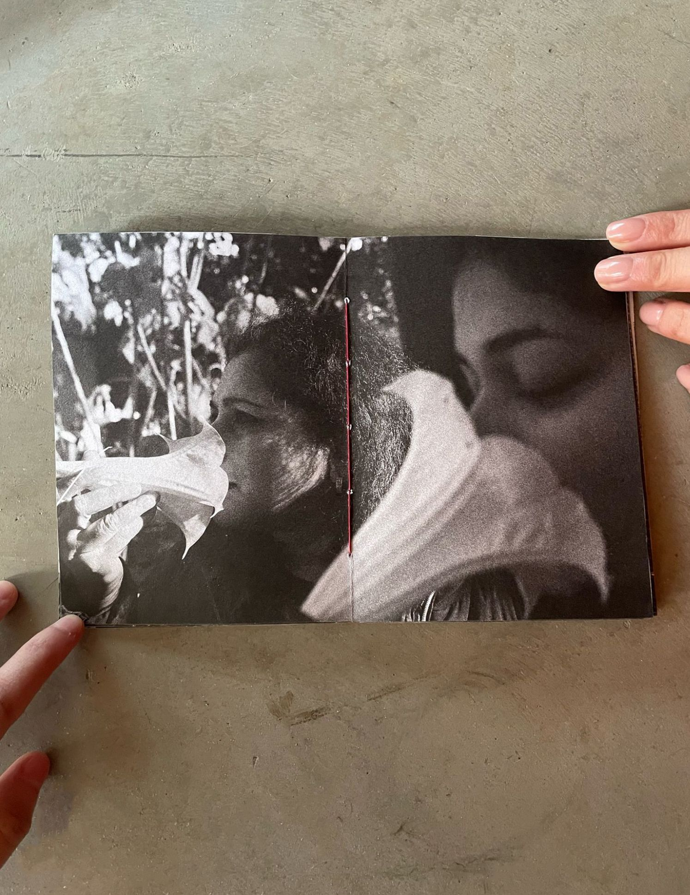
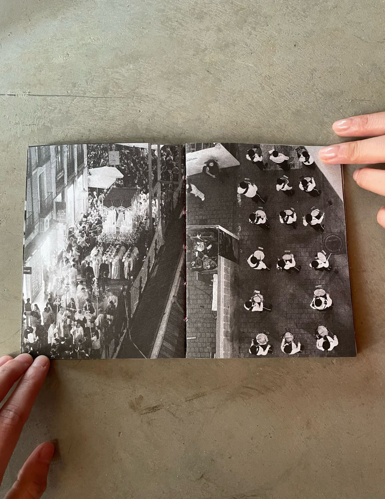
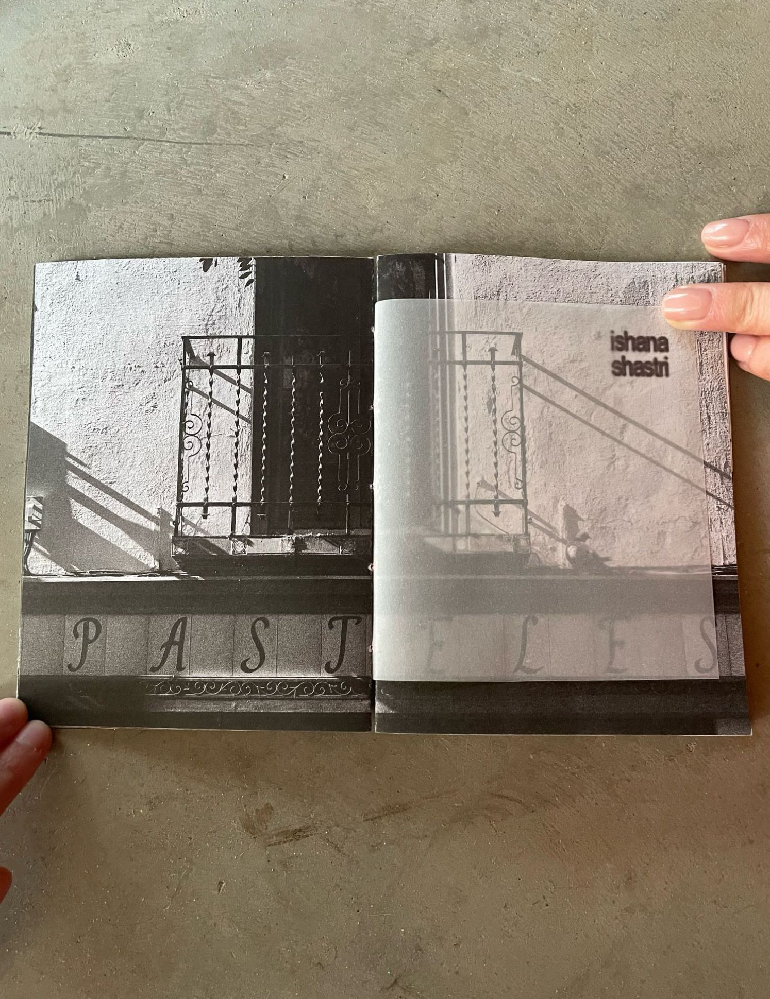
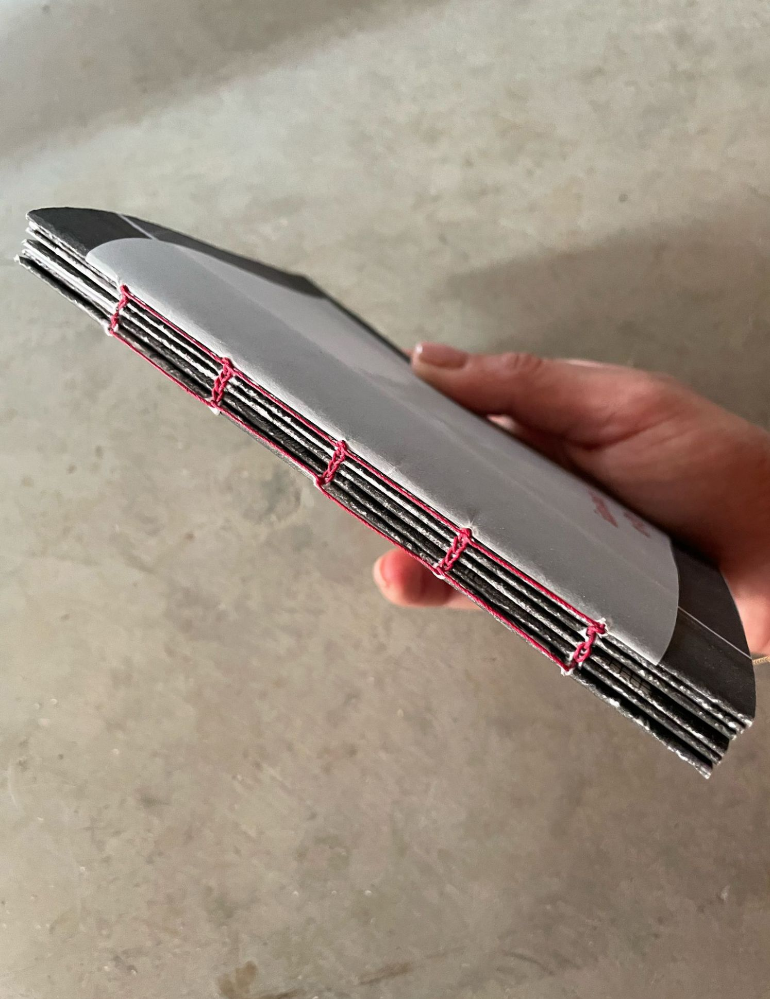
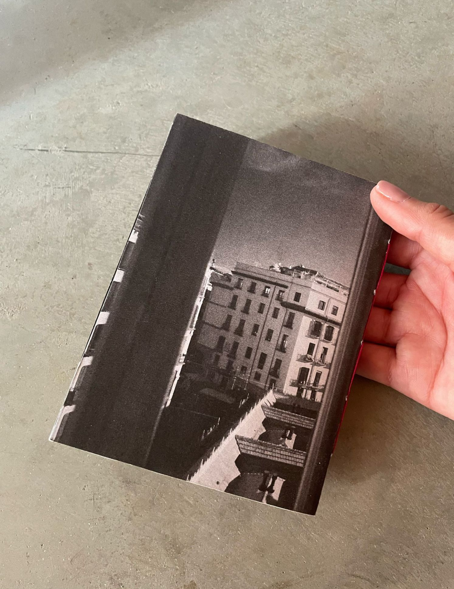
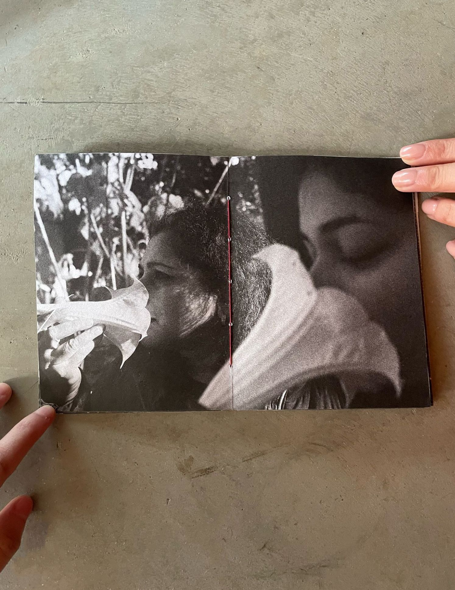
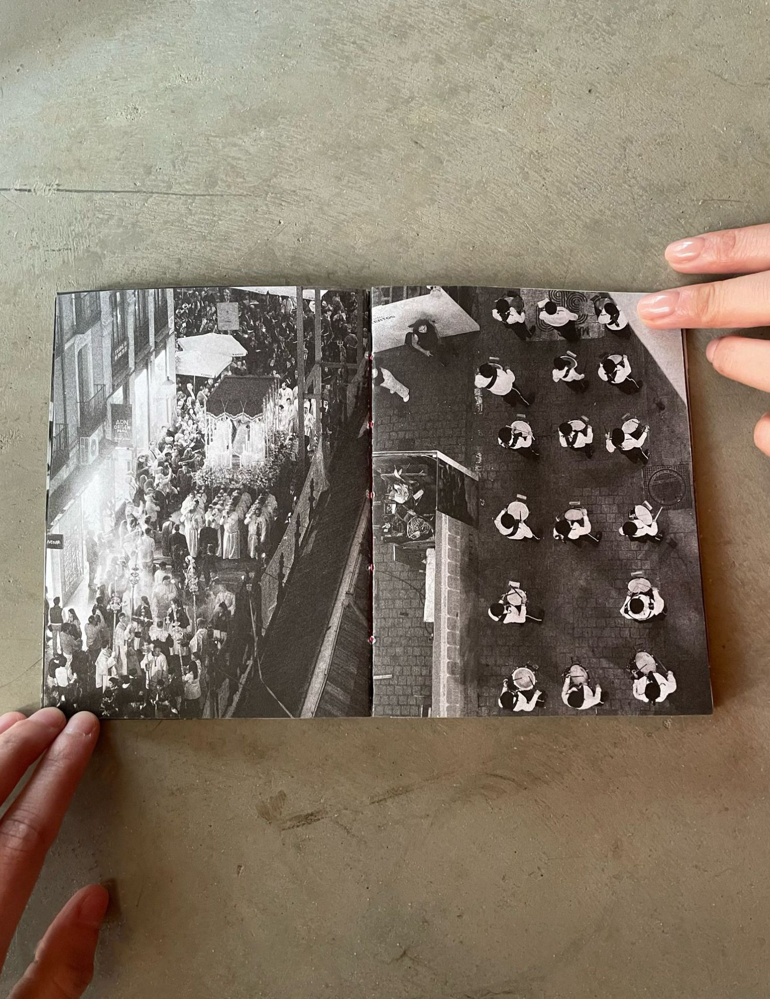
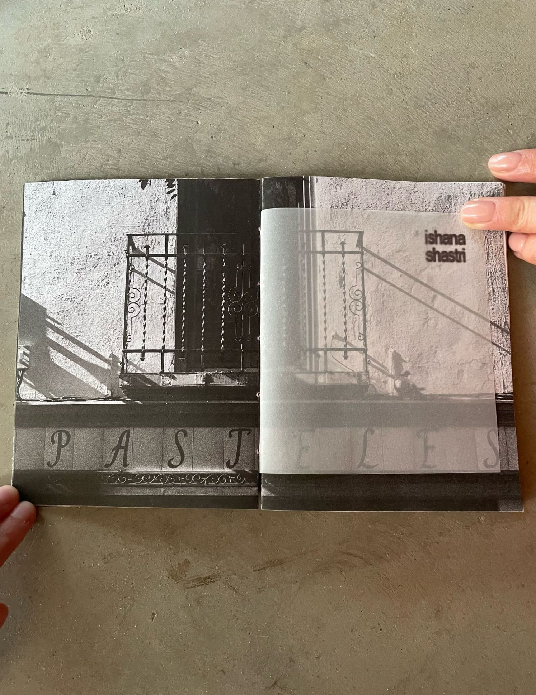
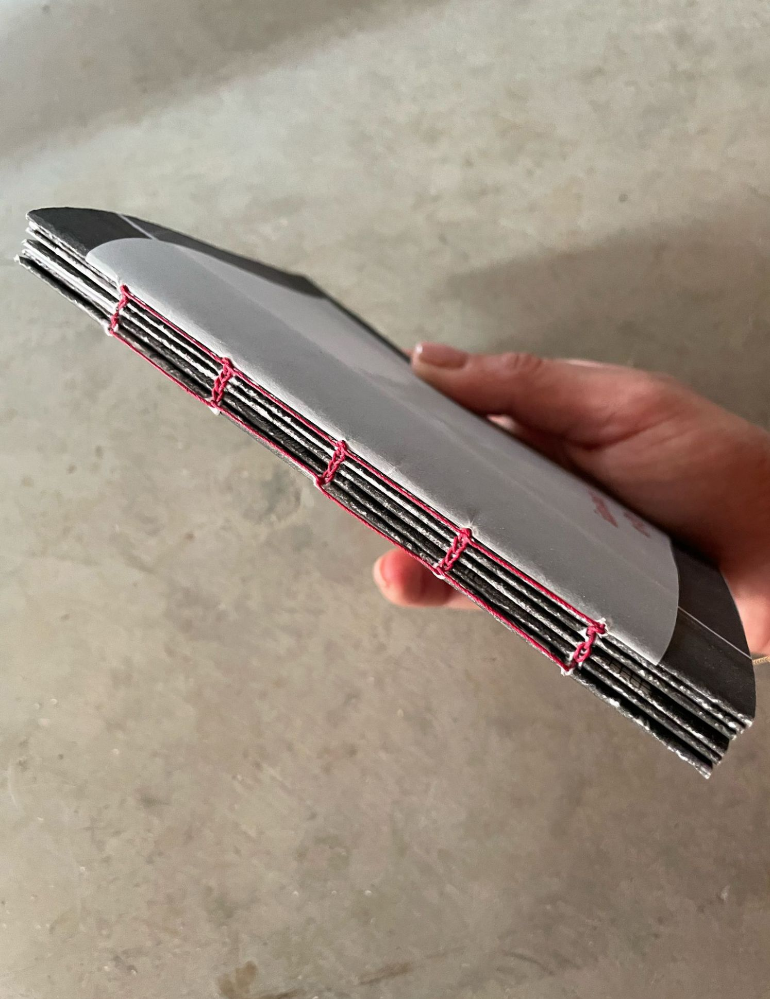
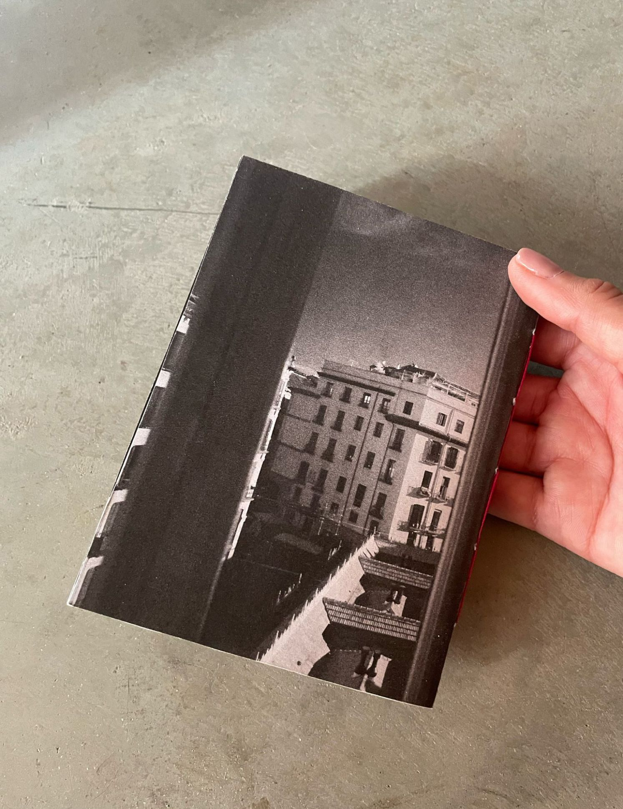

EXTENSIONS [2025]
I designed and published this printed zine including some of my original digital photography from traveling the world in the past year. This 4.5" x 6"
zine features 24 pages of 176 gsm matte paper and is hand-coptic bound with red waxed linen thread.
This was featured on Papers Archive's IG and will soon be featured in the first print publication of Papers Archive as well.
This zine was inspired by Jacopo Benassi's Dying in Venice, where the cover reads the following:
I made 25 copes of this zine, 24 of which are now sold. This zine has reached Fukuoka, Japan; Munich, Germany; Cambridge, Massachusetts; Brooklyn, NY; Ann Arbor, MI; Aurora, Colorado; Washington, DC; San Francisco, California; and Chicago, Illinois.
Huge thank you to GCC Printing in Frederick, MD for printing and cutting the zines. All images were taken on my Canon EOS R6.
Ping me for the last copy!
This was featured on Papers Archive's IG and will soon be featured in the first print publication of Papers Archive as well.
This zine was inspired by Jacopo Benassi's Dying in Venice, where the cover reads the following:
"Spending a whole night out in Venice feels like dying and be reborn, better the next day. I photographed what I did not want to photograph, and have not photographed what I wanted to photograph, I photographed to make my way through and get noticed by mice that live in total freedom at night as if they were hamsters or pets. I photographed myself to keep me awake and not to faint in the toilet of the station of Saint Lucia and the benches that lead to the arsenal."No pictures in this zine were taken with the intent of publishing them. I drew inspiration from Benassi to publish the images that made me uncomfortable: blurry images, too-casual-to-publish images, images of strangers where they noticed I was taking pictures of them, compositionally boring images, etc. This is a naive attempt at accepting that every image I take is an extension of what piques my mind, regardless of whether or not the image itself is compelling.
I made 25 copes of this zine, 24 of which are now sold. This zine has reached Fukuoka, Japan; Munich, Germany; Cambridge, Massachusetts; Brooklyn, NY; Ann Arbor, MI; Aurora, Colorado; Washington, DC; San Francisco, California; and Chicago, Illinois.
Huge thank you to GCC Printing in Frederick, MD for printing and cutting the zines. All images were taken on my Canon EOS R6.
Ping me for the last copy!

 








